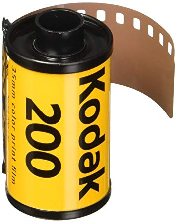
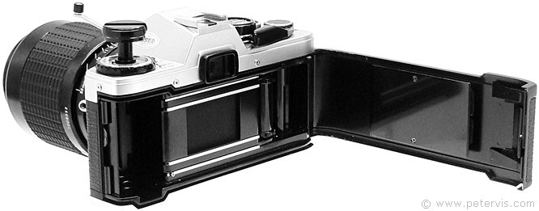

Here you will learn how to insert your own roll of film into a film camera
For this lesson you will need a film camera (with batteries) and a roll of 35mm film
Aquire a film camera and a new roll of film (preferably that of 200-400 speed)

Locate switch on camera (typically on the bottom) to open the film compartment on the back of the camera
Take your roll of film and place it in the lefthand compartment
Once you have done this, take the end of the film strip that is sticking out of the roll, and pull it until it reaches the spindle (teeth) on the opposite side of the chamber
Continue to feed the film into the spool until the small teeth grab onto it

Advance the film forward. In some cameras, you will use the lever to feed in a bit more of the film, while in other cameras you will use your fingers to pull the film leader out of the canister ever so slightly until the film aligns with a brightly colored mark.
Close the back of the camera once you have confirmed that the film is aligned and secure. You will hear the camera’s back cover click shut. You can then forward to your first frame of film by advancing the motor.